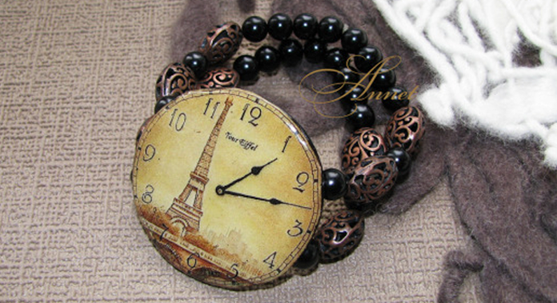

Заголовок Н1 Новая коллекция ручных часов
Наручные женские часы не только необходимость знания времени, но и элемент имиджа, предмет гордости, и украше ние! Для женщин стало престижно иметь не одни часы, а несколько. Они ведь, несомненно, должны сочетаться с Ва- шим нарядом. Сплошная элегантность и роскошь, браслет и корпус инкрустированы стразами, застежка простая.
Они ведь, несомненно, должны сочетаться с Вашим нарядом. Сплошная элегантность и роскошь, браслет и корпус инкрустированы стразами, застежка проста, удобна в применении.
Заголовок Н3
Наручные женские часы не только необходимость знания времени, но и элемент имиджа, предмет гордости, и украше ние! Для женщин стало престижно иметь не одни часы, а несколько. Они ведь, несомненно, должны сочетаться с Ва- шим нарядом. Сплошная элегантность и роскошь, браслет и корпус инкрустированы стразами, застежка простая.
- Модные женские часы в 2013 году!
- Самый модный цвет 2013 года!
- Часы женские с керамикой
- Самый модный цвет 2013 года!
- Часы женские с керамикой
Заголовок Н4
Часы должны сочетаться с Вашим нарядом. Сплошная элегантность и роскошь, браслет и корпус инкрустированы стразами, застежка простая:
- 1) Модные женские часы в 2013 году;
- 2) Самый модный цвет 2013 года;
- 3) Часы женские с керамикой;
Наручные женские часы не только необходимость знания времени, но и элемент имиджа, предмет гордости, и украше ние! Для женщин стало престижно иметь не одни часы, а несколько.
Таблица
| Время | Тестовое название | Название 1 | Название 2 | |
|---|---|---|---|---|
| 9:40 | Тестовое название 1 | колличество 1 | стоимость 1 | тестовая ссылка |
| 11:20 | Тестовое название 2 | колличество 2 | стоимость 2 | тестовая ссылка |
| 9:40 | Тестовое название 3 | колличество 3 | стоимость 3 | тестовая ссылка |
Табы
жа, предмет гордости, и украшение! Для женщин стало престижно иметь не одни часы, а несколько. Они ведь, несом
ненно, должны сочетаться с Вашим нарядом. Сплошная элегантность и роскошь, браслет, корпус инкрустированы стразами, застежка простая.
жа, предмет гордости, и украшение! Для женщин стало престижно иметь не одни часы, а несколько. Они ведь, несом
ненно, должны сочетаться с Вашим нарядом. Сплошная элегантность и роскошь, браслет, корпус инкрустированы стразами, застежка простая.